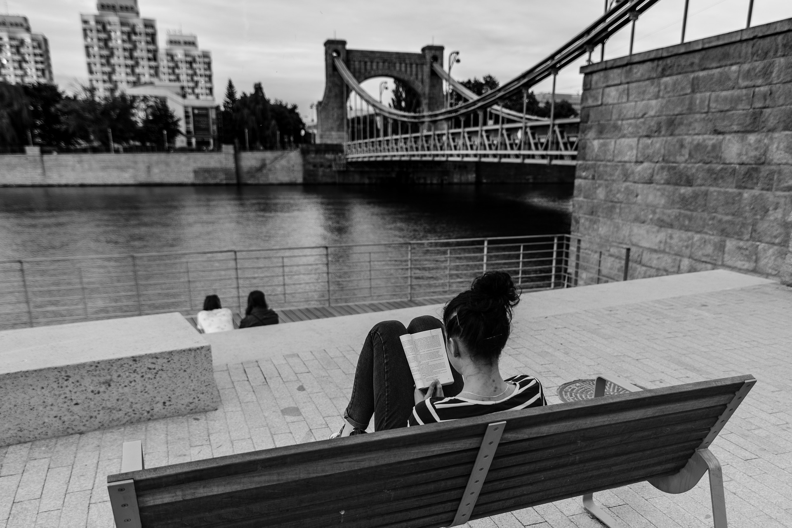
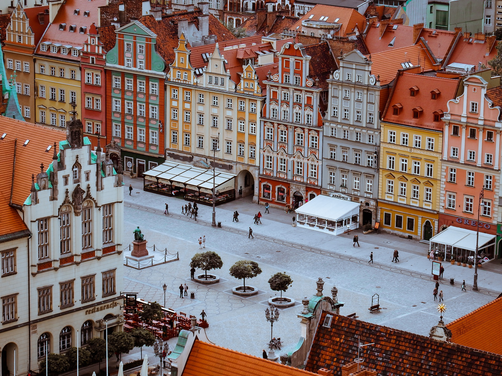
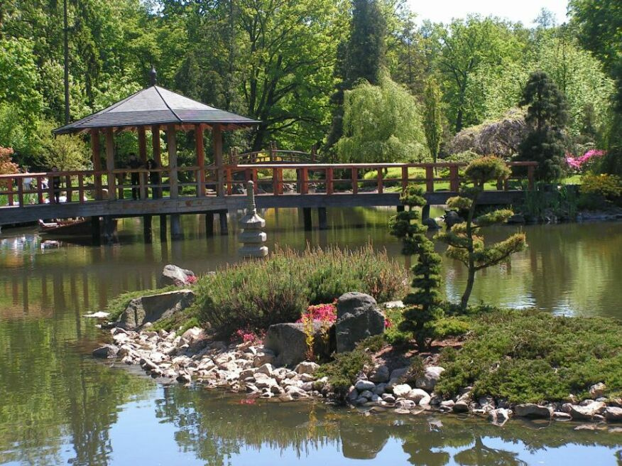
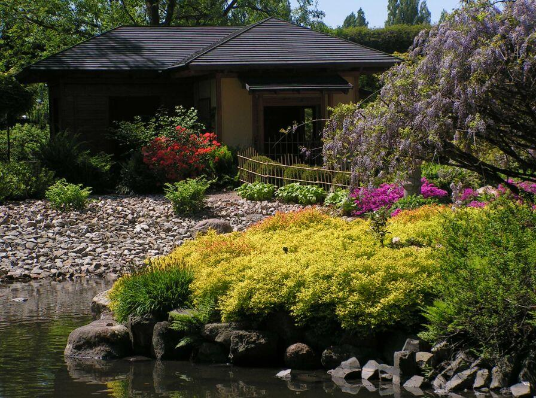
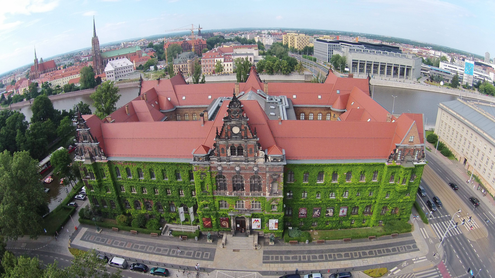
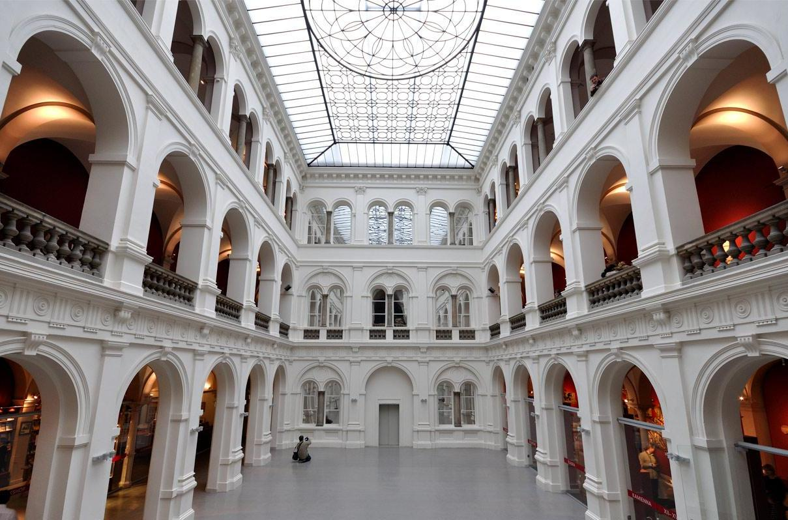
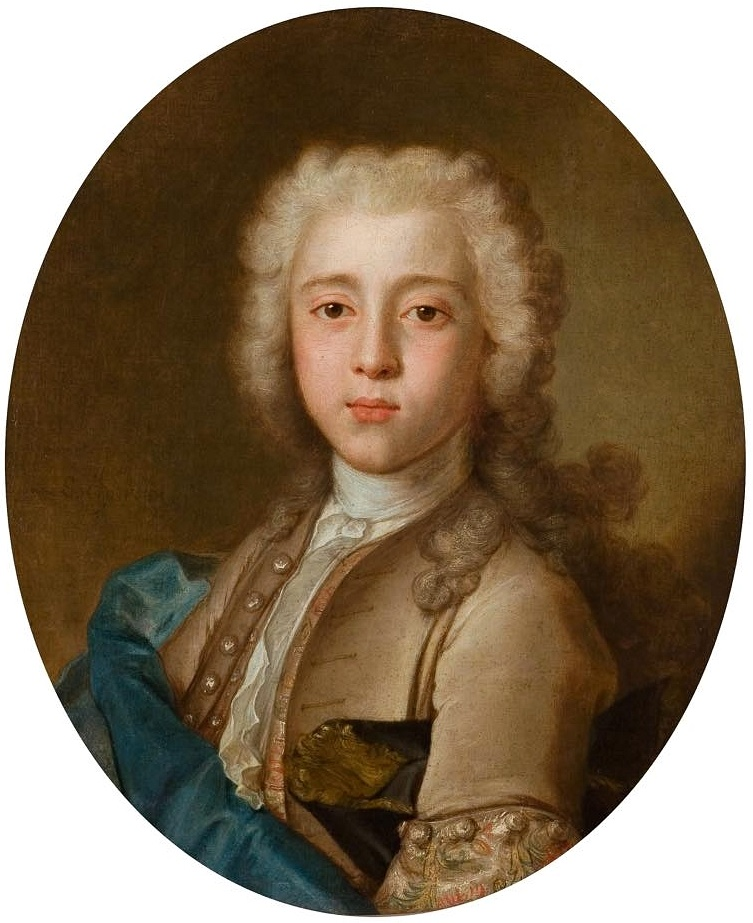
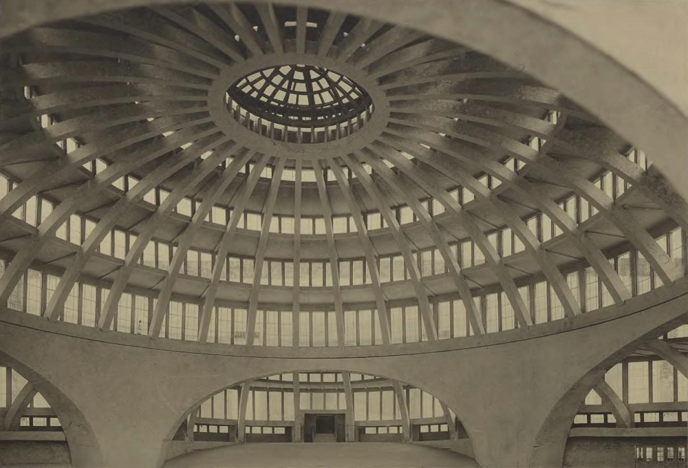

a
Wrocław
„Miasto stu mostów” lub „Wenecja północy”
Najbardziej współczesne dane wskazują, że we Wrocławiu jest obecnie 118 mostów i kładek, które znajdują się nad głównymi nurtami Odry.

Wrocławski Rynek
- Ma niemal 3,8 hektara i jest jednym z największych w Polsce.
- Przyciąga urokiem zabytkowych kamienic i żywiołowości.
- Stary Ratusz z 66-metrową wieżą jest unikatowym w skali europejskiej zabytkiem świeckiej architektury gotyckiej, jest najokazalszą tego typu budowlą w kraju.

-Rynek otacza 60 kamienic, w tym: Kamienica pod Złotym Słońcem, Kamienica pod Gryfami, Kamienica pod Siedmioma Elektorami, Kamienica pod Błękitnym Słońcem oraz dom towarowy braci Barasch (dzisiaj dom handlowy Feniks), od Rynku odchodzi 11 ulic.

Ogród Japoński
-To jedno z najpopularniejszych miejsc spacerów i relaksu. Oryginalne rośliny i niezwykła aranżacja przestrzeni czynią to miejsce wyjątkowym i klimatycznym.

Autorstwa Puchatech K. - Polska Wikipedia., CC BY-SA 3.0, https://commons.wikimedia.org/w/index.php?curid=783774
-Jedną z atrakcji miejsca jest staw z olbrzymimi karpiami oraz innymi gatunkami ryb. W Ogrodzie Japońskim często organizowane są pokazy parzenia herbaty, koncerty i imprezy plenerowe.

Autorstwa Puchatech K. - Polska Wikipedia., CC BY-SA 3.0, https://commons.wikimedia.org/w/index.php?curid=783785
Muzeum Narodowe
-Sztuka średniowieczna, dzieła epoki renesansu i baroku, sztuka Śląska oraz prace polskich i europejskich artystów współczesnych.
-Muzeum Narodowe od 1947 roku zajmuje gmach dawnej Rejencji - Zarządu Prowincji Śląskiej.

Autorstwa Fallaner - Praca własna, CC BY-SA 4.0, https://commons.wikimedia.org/w/index.php?curid=60427143

Autorstwa Neo[EZN] / fotopolska.eu, CC BY-SA 3.0, https://commons.wikimedia.org/w/index.php?curid=22245028
-Do najcenniejszych dzieł w kolekcji Muzeum Narodowego należą m.in. „Madonna z Jezusem i św. Janem” Agnolo Bronzino, „Pejzaż zimowy z łyżwami i pułapką na ptaki” Pietera Brueghela Młodszego oraz „Portret chłopca” Jeana Chardina.

Autorstwa Jean Chardin - wroclaw.gazeta.pl, Domena publiczna, https://commons.wikimedia.org/w/index.php?curid=23397527
Hala Stulecia we Wrocławiu
-Hala Stulecia to jedno z największych dzieł architektury XX w. Oryginalna konstrukcja Maxa Berga znajduje się na Liście Światowego Dziedzictwa UNESCO.

Autorstwa Jar.ciurus - Praca własna, CC BY-SA 3.0 pl, https://commons.wikimedia.org/w/index.php?curid=35439261
-Monumentalna Hala Stulecia została otwarta w 1913 r., w setną rocznicę zwycięstwa wojsk koalicji antyfrancuskiej nad armią Napoleona Bonapartego pod Lipskiem.
-Kopuła Hali Stulecia ma rozpiętość 65 m, a bryła budynku jest wysoka na 42 m. Główną salę widowiskową otaczają kuluary. Na widowni i płycie może się zmieścić nawet 10 tys. osób.

Autorstwa Heinrich Götz - Digitale Bibliothek der Universität Breslau - Link, Domena publiczna, https://commons.wikimedia.org/w/index.php?curid=13341959